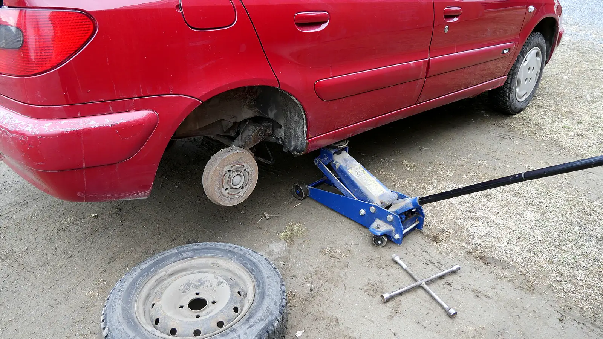
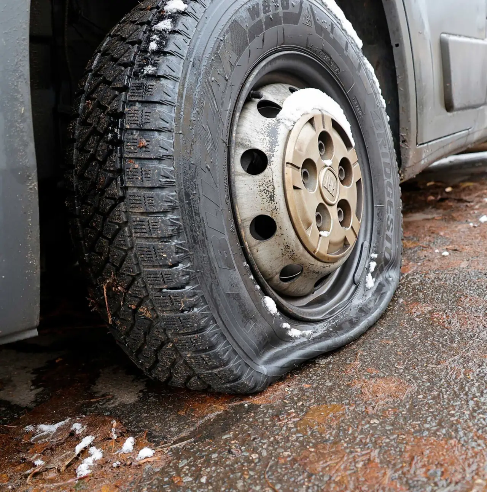
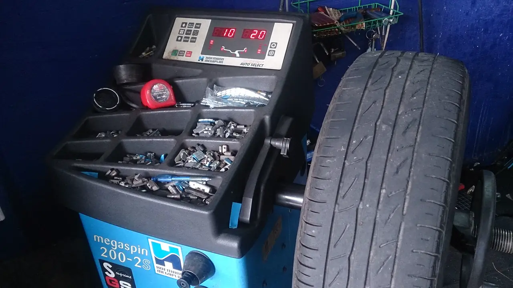
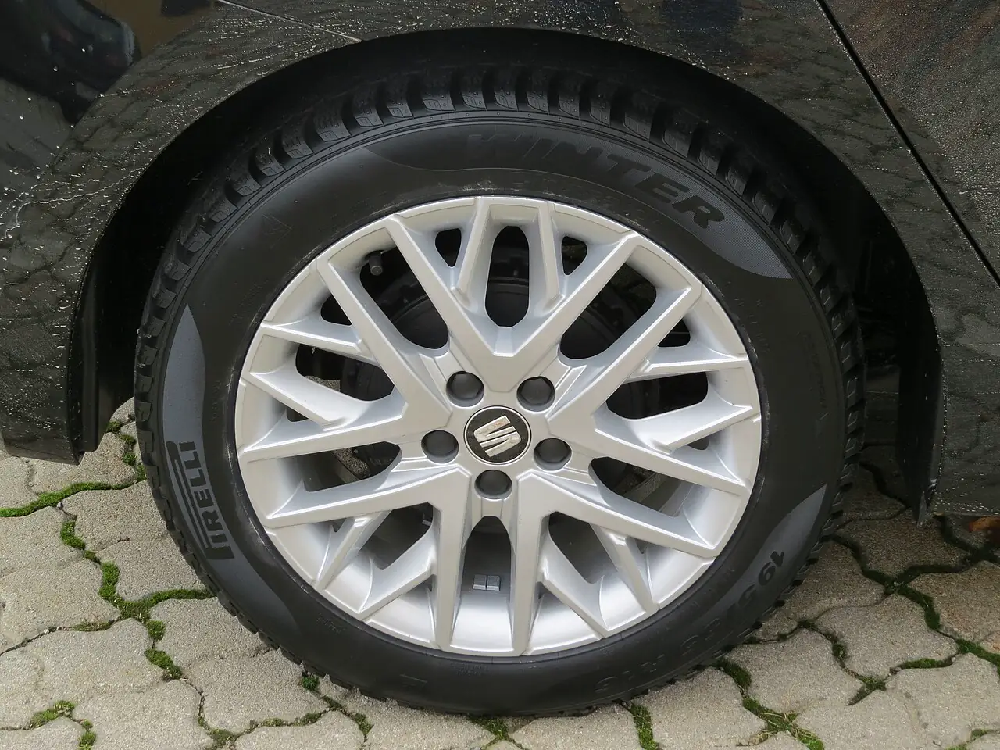
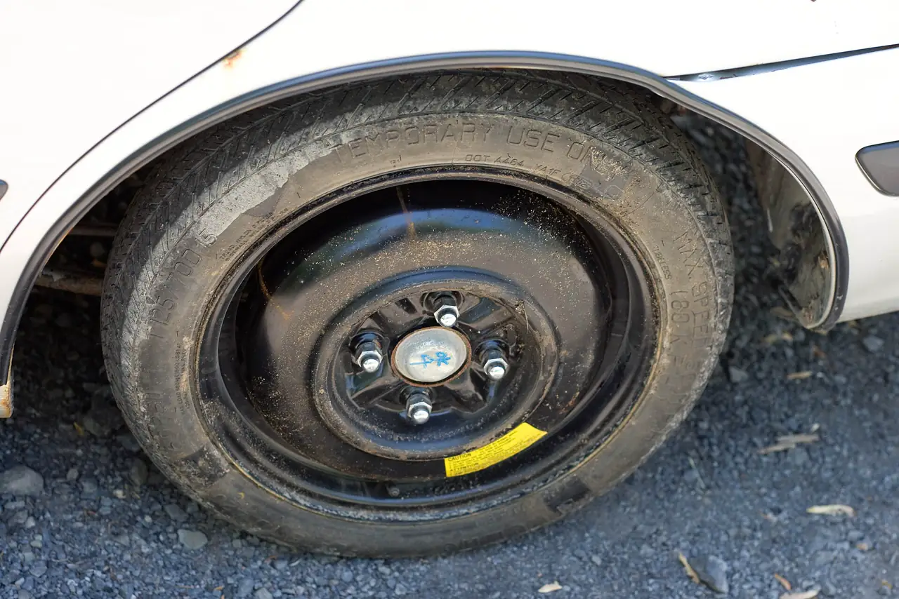
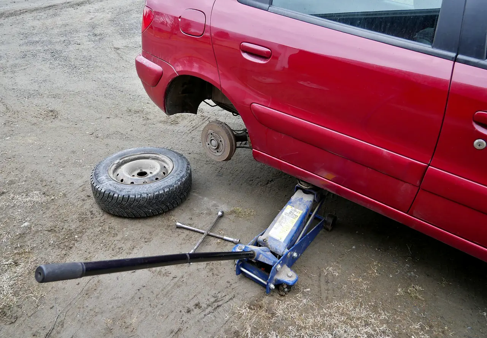

Lekke band of nieuwe banden? Wij komen naar u toe.
Thuis op de oprit, op de parkeerplaats van uw werk of langs de weg: wij repareren, vervangen en wisselen uw banden op de plek waar uw auto staat.
Weet u uw bandenmaat?
De maat staat op de zijkant van de band, bijvoorbeeld 205/55 R16. Weet u het niet? Stuur dan gewoon een foto.
- In heel Nederland
- Thuis, op het werk of langs de weg
- Prijs vooraf
Waarmee wij u helpen
Van een spijker in de band tot vier nieuwe winterbanden: wij komen met de juiste band en het juiste gereedschap naar u toe.

Lekke band
Een spijker in de band of een band die langzaam leegloopt. Wij repareren of vervangen hem op de plek waar uw auto staat.
Meer over lekke band
Nieuwe banden
Nieuwe zomer-, winter- of all-seasonbanden, gemonteerd en gebalanceerd op uw eigen oprit.
Meer over nieuwe banden
Seizoenswissel
Van zomer- naar winterbanden en weer terug, zonder dat u naar de garage hoeft.
Meer over seizoenswissel
Lekke band onderweg
Een lekke band onderweg en geen reservewiel, of alleen een thuiskomer waar u niet ver mee komt? Wij komen naar u toe.
Meer over lekke band onderwegWaar uw auto ook staat
U hoeft niet naar de garage en niet te wachten in een wachtruimte. Wij komen naar u toe.

Thuis
Op uw oprit of in de straat voor de deur. U hoeft uw dag niet om te gooien en wacht gewoon binnen.

Op het werk
Op de parkeerplaats van uw werk, terwijl u doorwerkt. Na uw werkdag rijdt u weg op de nieuwe banden.
Langs de weg
Met een lekke band langs de weg of op een parkeerplaats. Deel uw locatie via WhatsApp, dan komen we naar u toe.
Zo werkt het
Geef de bandenmaat en uw locatie door, de rest regelen wij.
Bel of app
Geef door wat u nodig heeft, uw bandenmaat en waar de auto staat. Een foto van de band is ook goed.
Prijs vooraf
U hoort wat het kost, inclusief montage en balanceren, en wanneer we er kunnen zijn.
Wij komen eraan
Met de banden in de juiste maat en al het gereedschap om ze ter plekke te monteren.
Weer op weg
We zetten de banden op spanning, controleren het profiel en u rijdt weer veilig verder.
Zo leest u uw bandenmaat
Op de zijkant van elke band staat een code, bijvoorbeeld 195/55 R16 91H. Met die code komen we met precies de goede band.
- 195BreedteDe breedte van de band in millimeters.
- 55HoogteDe hoogte van de zijkant, als percentage van de breedte.
- R16VelgmaatDe diameter van de velg in inches. De R staat voor radiaalband.
- 91HDraagvermogen en snelheidHoeveel gewicht de band mag dragen en hoe hard u ermee mag rijden.
Overal in Nederland
Wij komen naar u toe in alle 342 gemeenten van Nederland, van de grote stad tot het kleinste dorp. Kies uw provincie voor de gemeenten en woonplaatsen bij u in de buurt.
Veelgestelde vragen
Waar vind ik mijn bandenmaat?
Op de zijkant van de band, bijvoorbeeld 205/55 R16 91V. Het eerste getal is de breedte in millimeters, het tweede de hoogte van de zijkant als percentage van die breedte, en het getal na de R is de velgmaat in inches. Lukt het lezen niet, stuur dan een foto van de zijkant via WhatsApp.
Hoe snel kunnen jullie er zijn?
Dat hangt af van waar u staat en hoe druk het is, bijvoorbeeld rond de seizoenswissel. Bij uw melding zeggen we eerlijk wanneer we er kunnen zijn.
Wat kost een nieuwe band?
Dat hangt af van de maat, het merk en het type band. U hoort de prijs vooraf, inclusief montage en balanceren, zodat u niet voor verrassingen komt te staan.
Kunnen jullie een lekke band repareren?
Een gaatje in het loopvlak is vaak te repareren. Zit de schade in de zijkant, of is er met de lege band gereden, dan raden we een nieuwe band aan. Dat bekijken we ter plekke.
Wanneer wissel ik naar winterbanden?
In Nederland zijn winterbanden niet verplicht. Een goede vuistregel is: winterbanden van oktober tot Pasen, of zodra het overdag structureel kouder wordt dan zeven graden. Daaronder hebben winterbanden meer grip dan zomerbanden.
Hoeveel profiel moet er op mijn banden zitten?
Wettelijk minimaal 1,6 millimeter. Voor zomerbanden adviseren we te vervangen bij 3 millimeter, voor winterbanden bij 4 millimeter. Wij meten het profiel bij elke klus gratis voor u na.
Lekke band of nieuwe banden nodig?
Bel of app ons direct. We zeggen eerlijk wanneer we er kunnen zijn en wat het kost.